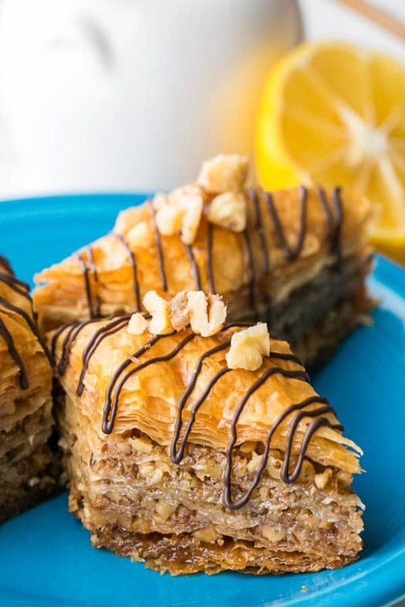
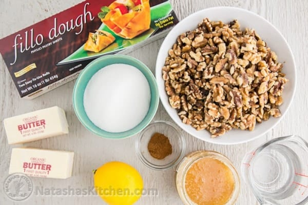
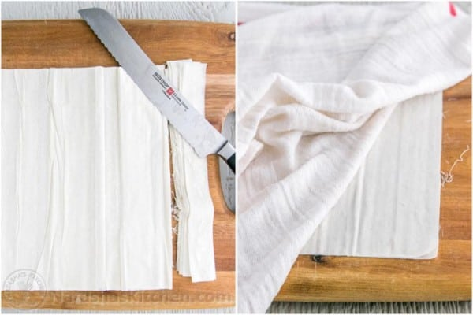
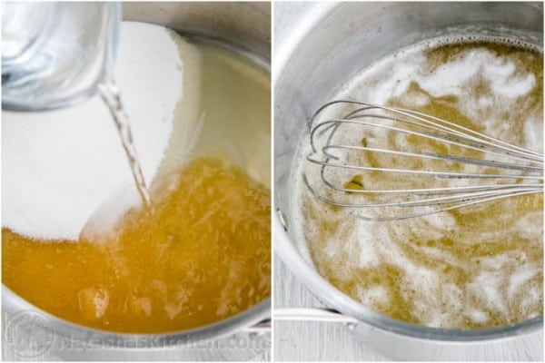
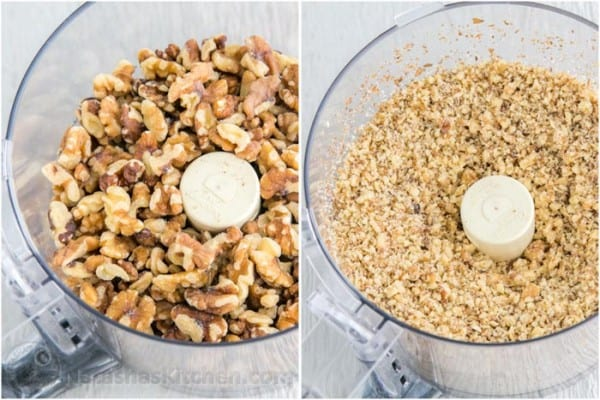
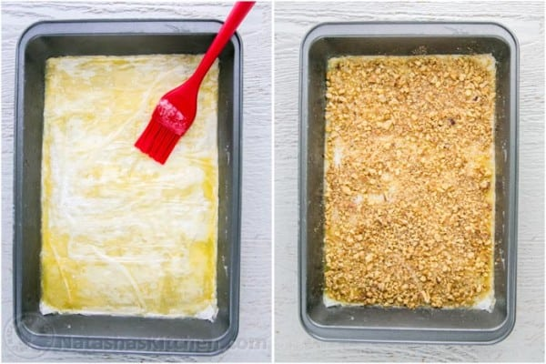
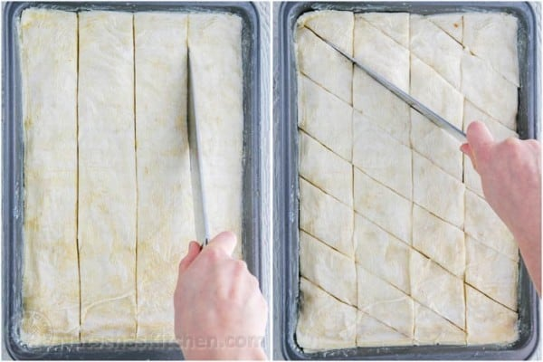
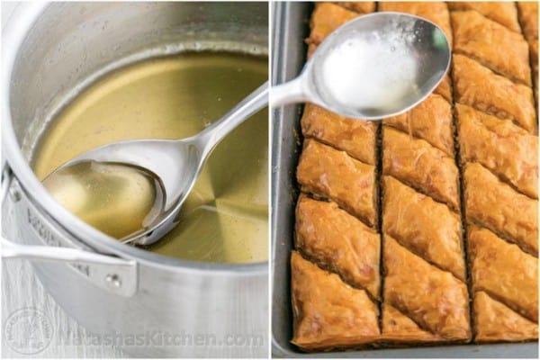
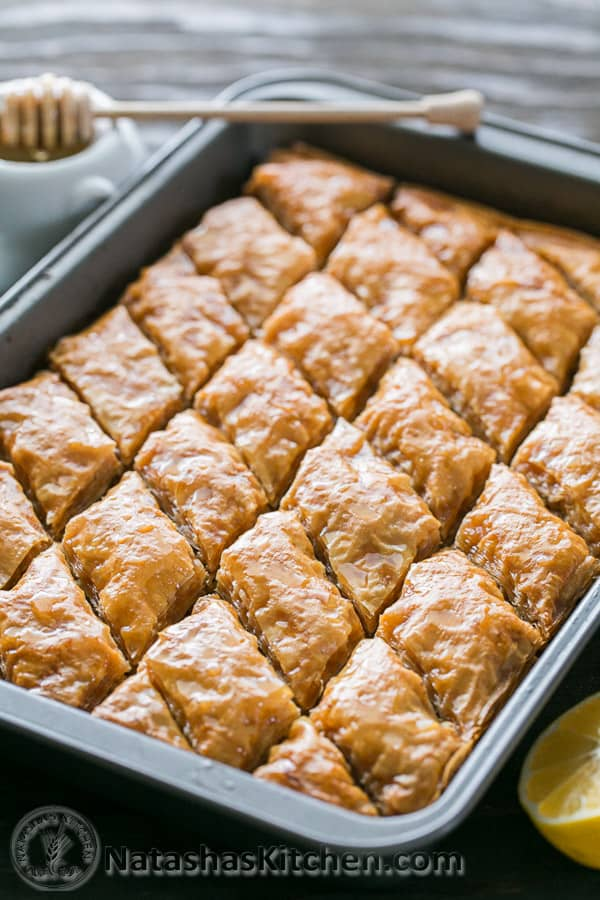
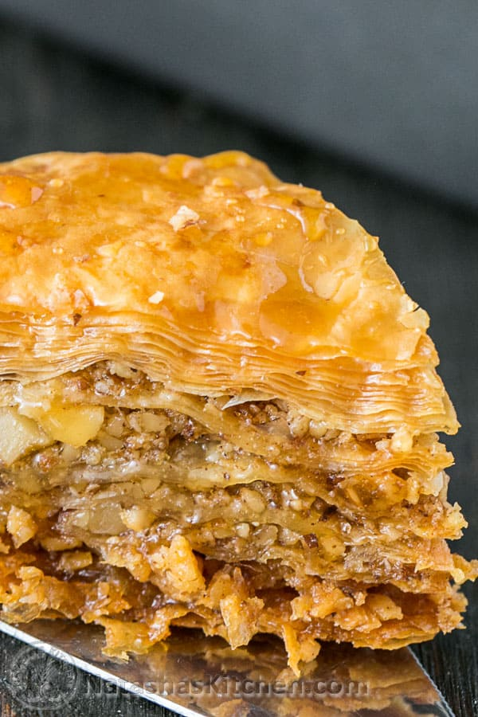

Baklava Recipe
December 21, 2014
This honey baklava is flaky, crisp and tender and I love that it isn’t overly sweet. It’s basically a party in your mouth. I am a huge fan of baklava and this is the BEST baklava recipe I have ever tried. Hands down.

Ingredients for Baklava Recipe:
You will need 1 (16 oz) package of phyllo (fillo) dough*; thawed according to package instructions *Fillo dough should be paper thin – even thinner than paper. Each package has 2 rolls with a total of 40 sheets. Do not use thick sheets of fillo dough for this recipe.
Also, don’t skimp on the butter or any part of the syrup (lemon juice, water and honey) since the recipe needs it to moisten and soften the sheets. Otherwise the baklava layers can end up dry and won’t stay together easily.
The chocolate is optional but a nice touch to fancy up a tray of baklava.

How To Make Baklava:
- In a medium bowl, whisk together dry ingredients: flour, baking powder, and salt.
- In a second bowl (or bowl of your stand mixer), beat together softened butter and sugar on medium-high speed 5 minutes until thick and fluffy.
- Beat in eggs 1 at a time, mixing to incorporate with each egg then blend in vanilla and scrape down the bowl.

- Start with your honey sauce (which will need time to cool as your baklava bakes).
- In a medium saucepan, combine 1 cup sugar, 1/2 cup honey, 2 Tbsp lemon juice, and 3/4 cup water. Bring to a boil over med/high heat, stirring until sugar is dissolved, then reduce heat to med/low and boil an additional 4 minutes without stirring. Remove from heat and let syrup cool while preparing baklava

How to Assemble Baklava:
Preheat Oven to 325˚F.
- Pulse walnuts about 10 times in a food processor until coarsely ground/ finely chopped. In a medium bowl, stir together: 4 cups finely chopped walnuts and 1 tsp cinnamon

- Place 10 phyllo sheets into baking pan one at a time, brushing each sheet with butter once it’s in the pan before adding the next (i.e. place phyllo sheet into pan, brush the top with butter, place next phyllo sheet in pan, butter the top, etc. etc.).
Keep remaining phyllo covered with a damp towel at all times. Spread about 1/5 of nut mixture (about 3/4 cup) over phyllo dough.

- Add 5 buttered sheets of phyllo, then another layer of nuts. Repeat x 4. Finish off with 10 layers of buttered phyllo sheets. Brush the very top with butter.
- Here’s the order:
- 10 buttered phyllo sheets, 3/4 cup nut mixture,
- 5 buttered phyllo sheets, 3/4 cup nut mixture,
- 5 buttered phyllo sheets, 3/4 cup nut mixture,
- 5 buttered phyllo sheets, 3/4 cup nut mixture,
- 5 buttered phyllo sheets, 3/4 cup nut mixture
- 10 buttered phyllo sheets and butter the top.
- Cut pastry into 1 1/2″ wide strips, then cut diagonally to form diamond shapes. Bake at 325˚F for 1 hour and 15 min or until tops are golden brown

- Remove from oven and immediately spoon the cooled syrup evenly over the hot baklava (you’ll hear it sizzle). This will ensure that it stays crisp rather than soggy. Let baklava cool completely, uncovered and at room temperature


Tip: For best results, let baklava sit 4-6 hours or overnight at room temperature for the syrup to penetrate and soften the layers. Garnish baklava with finely chopped nuts or drizzle with melted chocolate. Store at room temp, covered with a tea towel for 1 to 2 weeks.
